ClauDeck Lite
Free
- Plan usage keys, all five layouts
- 5-hour, 7-day and per-model windows
- Reset countdown, tap to refresh
- Session keys
- Approvals and answers
- Session menu and profiles
- Forecast, history and alerts
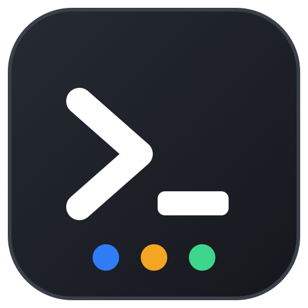
ClauDeck Get it// stream deck plugin for claude code
See who is working, who is waiting for you and who is done. Approve, answer, jump to the terminal and keep an eye on your plan — from the deck.
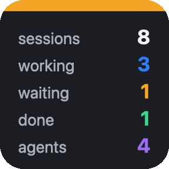
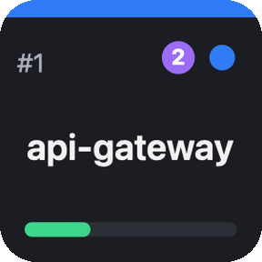
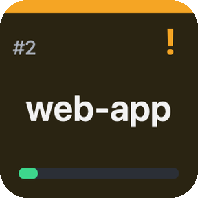
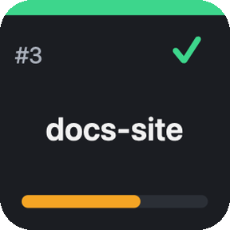
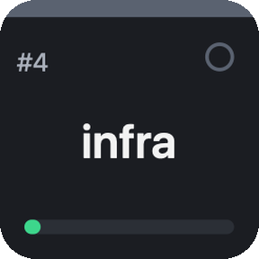
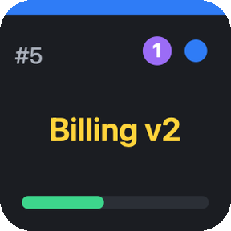
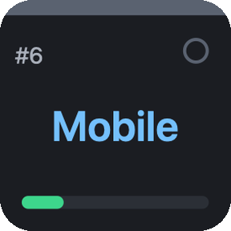
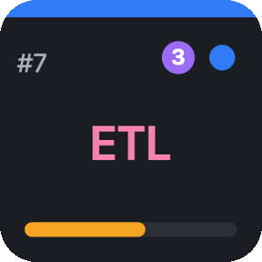
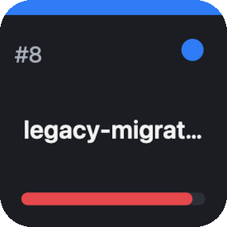
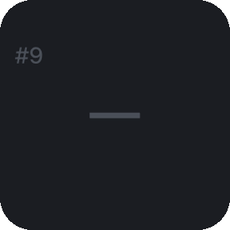
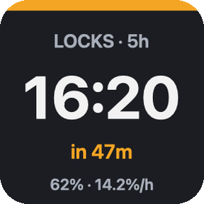
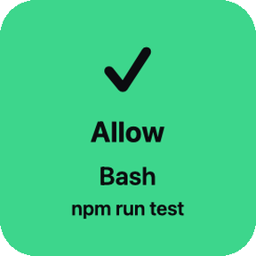
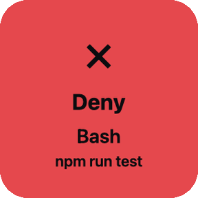
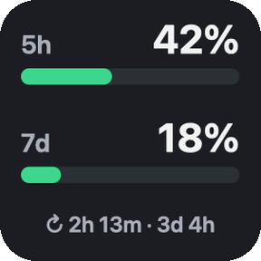
STREAM DECK · live mockup, real key renders
Colors tell the story before you read a word. Scroll on for the details.
// pro · approvals
Keys stay dark until Claude asks. Then they light up with the tool and the command. One tap and Claude keeps going. No tap in 90 seconds, or the plugin is off? Claude shows its normal terminal prompt — nothing is ever blocked.
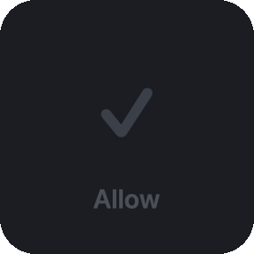
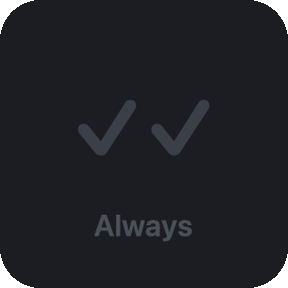
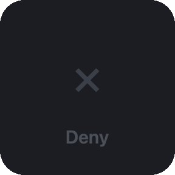
Claude asks ↓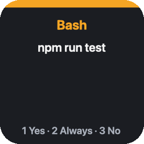
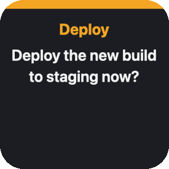
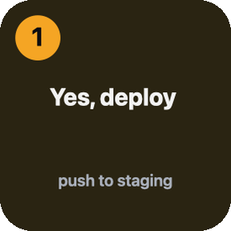
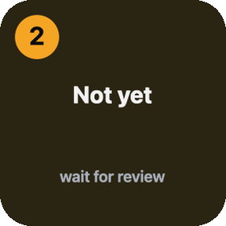
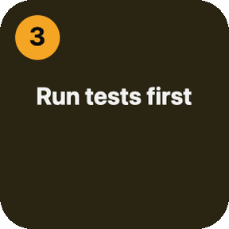
// pro · questions
When Claude asks a multiple-choice question, the options become keys. The question key shows the text; press an option and the answer lands in the session. Several questions? They come one after another.
// pro · session menu
Short press opens a profile dedicated to that session: allow, deny, answer, jump to its terminal, back. Long press goes straight to the terminal. Two ready-made profiles ship with the plugin for Stream Deck, Mini, XL, + and Neo — nothing to drag.
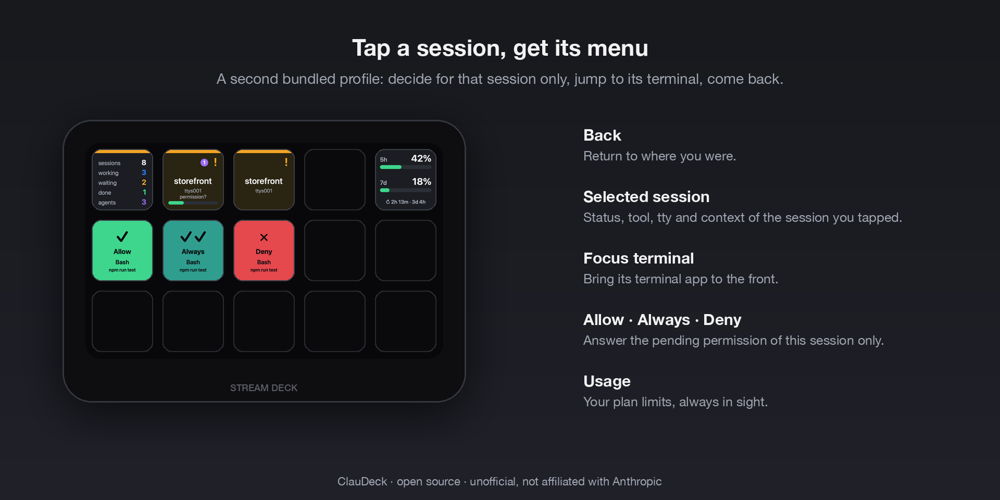
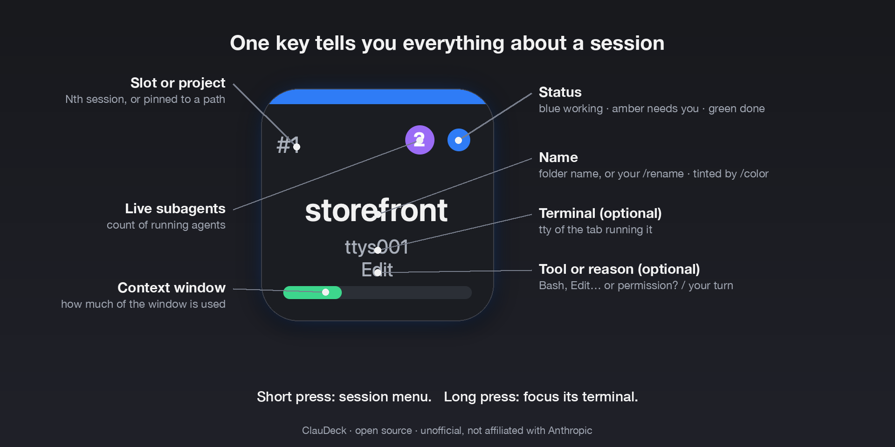
// pro · sessions
Claude Code hooks report in real time, asynchronously, so Claude never waits on the deck. A process scan and Claude Code's own session registry pick up sessions started before install or idle for days. Background agents are counted; their work never hides a prompt waiting for you.
/rename, colors from /color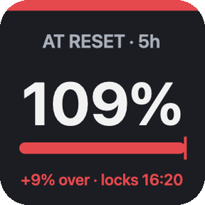
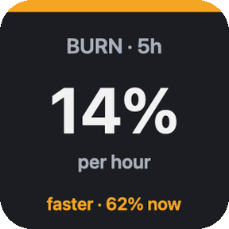
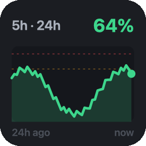
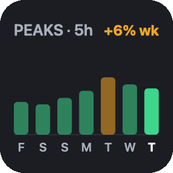
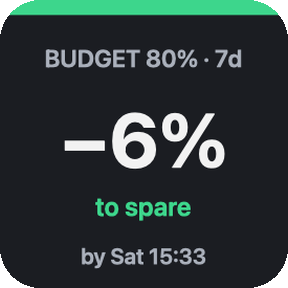
// pro · forecast & history
A small usage history kept on your machine turns today's numbers into a lockout clock, a projected percentage at the reset and a burn rate per hour. A sparkline shows the last hours; weekly peaks show the trend. Native alerts fire once per window: an early warning with the predicted lockout time, the hard threshold, and a ping when a nearly full window resets.
// lite & pro · plan usage
The same numbers as /usage: 5-hour session, 7-day window and per-model, with time to reset as a countdown or a clock time. Pick the layout per key, including a credits view for extra-usage spend. Green, amber, red.
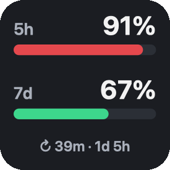
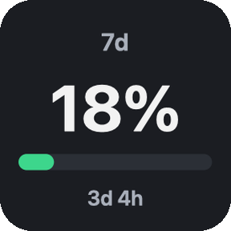
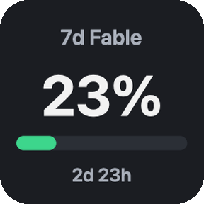
// two editions, one codebase
Free
€4.65 one-time
Sold through the Elgato Marketplace. Requires the Claude Code CLI installed natively on macOS 12+ or Windows 10+ and a Claude subscription. Unofficial; not affiliated with Anthropic or Elgato.
// three steps
The Stream Deck app opens and installs it for you.
In the key's settings. ClauDeck registers Claude Code hooks for you — async, never slowing Claude down.
It opens the ready-made profile with a key per session. Sessions you already have open start reporting straight away — no need to restart them.
// support
Issues and discussions live on the public ClauDeckWeb repository. Include your OS, Stream Deck app version, Claude Code version and the plugin log. The log lives in the plugin folder under logs/; the debug trace of hooks can be switched on with touch ~/.claude/claude-deck/debug.
Any. The plugin identifies the terminal from the session's environment (Ghostty, iTerm2, Terminal, WezTerm, VS Code, Warp, cmux, Windows Terminal…). Pressing a key raises the session's exact tab in cmux, tmux, iTerm2 and Terminal; every other terminal is brought to the front, since they expose no way to select a tab. macOS asks once for permission to control that app.
No. Event hooks are asynchronous. The only synchronous hook is the permission prompt, and only in modes where Claude would ask you anyway. In auto mode it answers instantly and lets Claude's classifier decide.
Nothing, except the call to Anthropic's usage endpoint made with the login token Claude Code already keeps (Keychain on macOS, credentials file on Windows). No analytics, no third-party servers.
Not supported: hooks run where Claude runs and cannot reach the plugin. Claude Code must be installed natively.
If the app is older than 7.1 the install stops with (ContentError) Plugin and no explanation: ClauDeck needs 7.1 or newer. Update the Stream Deck app and install again. On Windows the app’s own updater sometimes reports an update error even though the installer has already downloaded, in which case grab the installer from elgato.com.
Yes. Drag any ClauDeck key into any profile. The bundled profiles are a starting point, not a requirement. They keep the same names for ever, so if a future version changes one and you had rearranged it, duplicate your profile first to keep your own version alongside the new one.